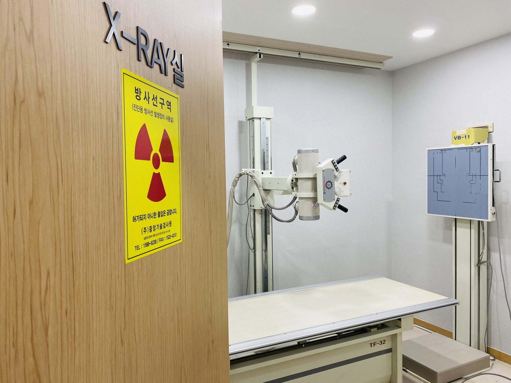

목
목 통증과 목의 곡선. 일자목, 거북목은 체형 진료로 연결.
뼈는 X-ray, 근육과 힘줄은 초음파. 경추 중재는 C-arm. 경추·흉추 중재는 원장 수료 범위.
시술 전 상담. 개인에 따라 치료 후 불편이 있을 수 있습니다.
원내에 X-ray실, 초음파실, C-arm실. 사진과 영상 후 치료 방향.

목 통증과 목의 곡선. 일자목, 거북목은 체형 진료로 연결.
뼈는 X-ray, 근육과 힘줄은 초음파. 경추 중재는 C-arm. 경추·흉추 중재는 원장 수료 범위.
시술 전 상담. 개인에 따라 치료 후 불편이 있을 수 있습니다.
허리·요추의 시작 시기, 다리로 퍼지는 느낌.
X-ray와 초음파로 본 뒤, 위치를 더 봐야 하면 C-arm을 씁니다. 요추·천추 중재 수료가 이 진료에 해당합니다.
영상 후 비수술 여부. 도수치료가 맞으면 물리·도수치료실.
어깨 관절의 움직임, 굽은 어깨. 아픈 동작.
근육과 힘줄은 초음파, 뼈와 관절은 X-ray. 필요한 검사만.
체형이 같이 보이면 물리·도수. 목·허리 영상은 이 진료.
무릎 관절, 다리 정렬. 걸을 때와 계단.
관절은 X-ray, 초음파. 골반·평발이 있으면 체형 진료.
체중이 같이 고민이면 비만클리닉도 같은 자리.
오십견, 회전근개